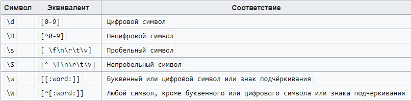
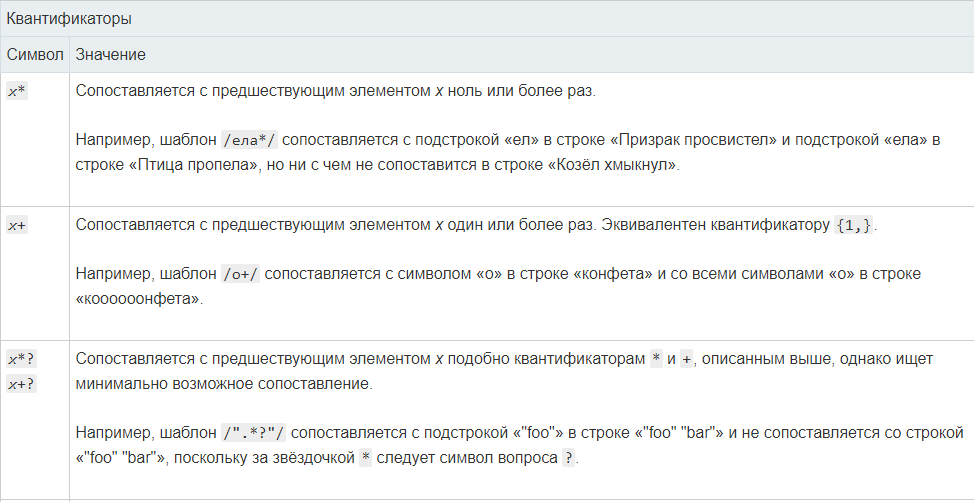
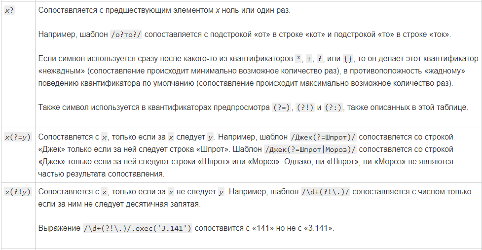
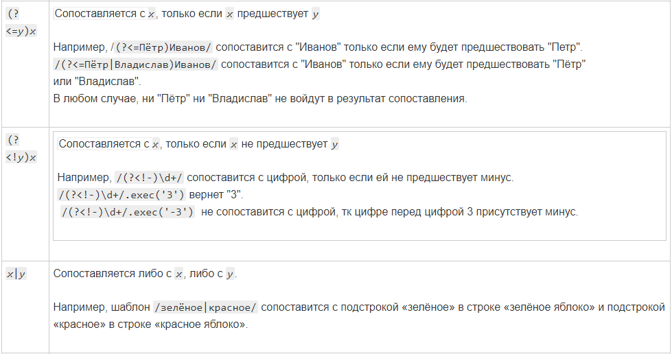
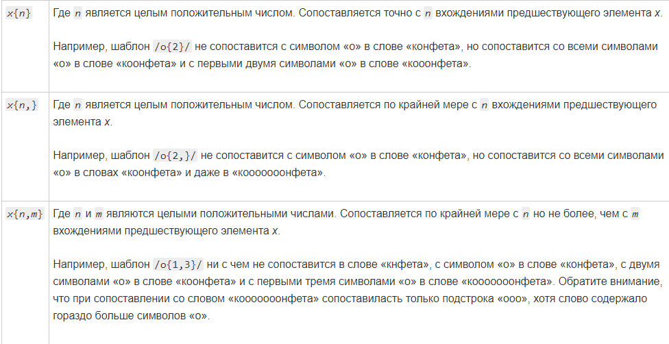
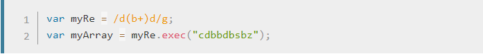
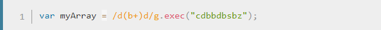
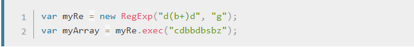

Регулярные выражения это шаблоны, используемые для поиска совпадения, совпадения в тексте или сроках. В JavaScript регулярные выражения также являются объектами. Эти шаблоны використовуются для поиска совпадения в тексте.
....или так:
Регулярные выражения — язык поиска подстроки или подстрок в тексте. Для поиска используется паттерн (шаблон, маска), состоящий из символов и метасимволов (символы, которые обозначают не сами себя, а набор символов). Это довольно мощный инструмент, который может пригодиться во многих случая — поиск, проверка на корректность строки и т.д.
В JavaScript регулярные выражения реализованы отдельным объектом RegExp и интегрированы в методы строк.
Существует два синтаксиса для создания регулярного выражения.
«Длинный» синтаксис:
regexp = new RegExp("шаблон", "флаги");
…И короткий синтаксис, использующий слеши "/":
regexp = /шаблон/; // без флагов
regexp = /шаблон/gmi; // с флагами gmi (будут описаны далее)
Слеши /.../ говорят JavaScript о том, что это регулярное выражение. Они играют здесь ту же роль, что и кавычки для обозначения строк. Регулярное выражение regexp в обоих случаях является объектом встроенного класса RegExp. Основная разница между этими двумя способами создания заключается в том, что слеши /.../ не допускают никаких вставок переменных (наподобие возможных в строках через ${...}). Они полностью статичны. Слеши используются, когда мы на момент написания кода точно знаем, каким будет регулярное выражение – и это большинство ситуаций. А new RegExp – когда мы хотим создать регулярное выражение «на лету» из динамически сгенерированной строки,
Регулярные выражения могут иметь флаги, которые влияют на поиск.
В JavaScript их всего шесть:
i
С этим флагом поиск не зависит от регистра: нет разницы между A и a
g
С этим флагом поиск ищет все совпадения, без него – только первое.
m
Многострочный режим
s
Включает режим «dotall», при котором точка . может соответствовать символу перевода строки \n
u
Включает полную поддержку юникода. Флаг разрешает корректную обработку суррогатных пар
y
Режим поиска на конкретной позиции в тексте
Чтобы использовать флаги в шаблоне регулярного выражения используйте следующий синтаксис:
let re = /pattern/flags;
или
let re = new RegExp("pattern", "flags");
Флаги являются неотъемлемой частью регулярного выражения. Флаги не могут быть добавлены или удалены позднее.
Некоторые символьные классы можно заменить специальными метасимволами:
Квантификаторы — это метасимволы, позволяющие задать количество повторений символа или группы символов в строке. Они служат основными «строительными блоками» сложных регулярных выражений.
   Как и в математических операциях, круглые скобки () используются для группировки элементов выражения. Таким образом, круглые скобки также являются метасимволами.
Мы можем применять обратные ссылки для обращения к тексту, совпавшему с элементами выражения в круглых скобках. Обратная ссылка обозначается обратной косой чертой, за которой следует цифра: \1, \2 и т. д. Цифра обозначает номер пары скобок.
Чтобы просто узнать есть ли в строке что либо соотвествующее шаблону, воспользуйтесь методами test или search; а чтобы получить больше информации пользуйтесь методами exec или match (хотя эти метода работают медленее). Если вы пользуютесь exec или match и если совпадения есть, эти методы вернут массив и обновленные свойства объекта ассоцированного регулярного выражения а также предопределенного объекта RegExp регулярного выражения. Если совпадений нет, метод exec вернет null (который сконвертируется в false).
В след. примере, скрипт использует метод exec чтобы найти совпадения в строке.
Если вам не нужен доступ к свойствам регулярного выражения, то альтернативный способ получить myArray можно так:
Если вы хотите сконструировать регулярное выражение из строки, другой способ сделать это приведен ниже:
